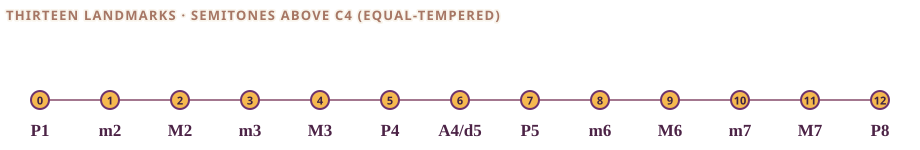
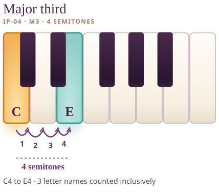

Ajourné · Interval Palette · M05 asset review (not live)
Assembled samples
Three compositions in the light Ajourné page language: landing, one card and one deep chapter, using the real source copy.
Sample 1 · landing
Interval Palette


Thirteen landmarks above C. Choose one to explore. Everything on this page is for your own keyboard.
Sample 2 · one card


clear, warm, luminous · C4–E4
Sample 3 · deep chapter (source copy retained)
Major third

Meet the interval
Count C–D–E inclusively to find a third. Count chromatic movements from C to E to find four semitones. Together those facts name a major third.
As a moving melody
From C to E is a small leap that can be a call, a beginning gesture or a high point; singing and tracing it can make its size familiar.
Two notes together
Together the notes form a clear two-note sonority in many familiar tonal settings. If G is added, C–E–G forms a C-major triad; without G, call it a dyad.
In actual music
Use to begin major-chord thinking, write memorable motifs, design glowing pad colors and compare two independent voice positions.
On your own keyboard
Find C4 and play it, then E4. Count four keys. Now lower E to E♭ and count three. Which one do you want to use in the next thing you write? There is no wrong answer.